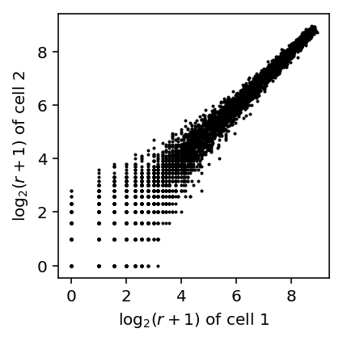
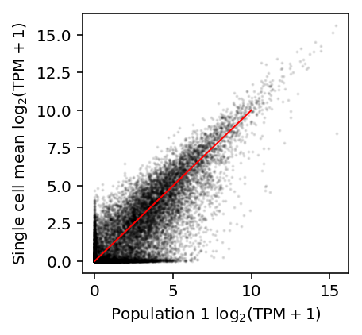

Technical zero-generating mechanism in scRNA-seq data
Table of Contents
Introduction
Important recent work has demonstrated that Multinomial (equivalently, Poisson) sampling is sufficient to model the noise introduced by sequencing (Wang et al. 2018, Townes et al. 2019). Here, we show that previously cited evidence of a technical zero-generating mechanism can be replicated in simulated data without such a mechanism.
Setup
Submitted batch job 51133345
%matplotlib inline %config InlineBackend.figure_formats = set(['retina']) import colorcet import gzip import matplotlib.pyplot as plt import numpy as np import pandas as pd import scipy.stats as st import sklearn.neighbors as skn import rpy2.robjects.packages import rpy2.robjects.pandas2ri import rpy2.robjects.numpy2ri rpy2.robjects.pandas2ri.activate() rpy2.robjects.numpy2ri.activate() mclust = rpy2.robjects.packages.importr('mclust')
Joint distribution of expression across genes
Reproduce Fig 1C of Kharchenko et al 2014. They analyzed scRNA-Seq of mouse embryonic fibroblast cells generated by Islam et al 2011.
{kind=link}
curl -s -o GSE29087_L139_expression_tab.txt.gz "https://www.ncbi.nlm.nih.gov/geo/download/?acc=GSE29087&format=file&file=GSE29087_L139_expression_tab.txt.gz"
islam_counts <- read.delim(gzfile('/scratch/midway2/aksarkar/modes/GSE29087_L139_expression_tab.txt.gz'), skip=6, header=F) x <- log10(islam_counts[,92] + 1) y <- log10(islam_counts[,93] + 1) keep <- x != 0 | y != 0 png('temp.png', width=4, height=4, res=300, units="in") smoothScatter(x[keep],y[keep] ) dev.off()

Parse the data.
with gzip.open('/scratch/midway2/aksarkar/modes/GSE29087_L139_expression_tab.txt.gz', 'rt') as f: next(f) # first three lines are description next(f) next(f) barcodes = next(f).split() samples = next(f).split() next(f) # skip header features = [] counts = [] for line in f: row = line.split('\t') features.append(row[:6]) counts.append([int(x) if x else np.nan for x in row[6:]]) counts = np.ma.masked_invalid(np.array(counts).T)
Plot the joint distribution of \(\log_2\) expression values across a pair of cells.
def plot_joint_dist_two_cells(x, y): x = np.log(x + 1) / np.log(2) y = np.log(y + 1) / np.log(2) keep = (x + y) > 0 plt.clf() plt.gcf().set_size_inches(3, 3) plt.hexbin(x[keep], y[keep], gridsize=25, bins='log', cmap=colorcet.cm['bgyw_r']) H, xx, yy = np.histogram2d(x[keep], y[keep], bins=30) gridx, gridy = np.meshgrid(xx[1:] + (xx[1] - xx[0]) / 2, yy[1:] + (yy[1] - yy[0]) / 2) low_pass = np.logical_and(H > 0, H < 3) plt.scatter(gridx[low_pass].ravel(), gridy[low_pass].ravel(), c='k', s=H[low_pass], alpha=0.5) plt.xlim([-0.5, 16]) plt.ylim([-0.5, 16]) plt.xticks(np.arange(0, 16, 5)) plt.yticks(np.arange(0, 16, 5)) plt.xlabel('$\log_2(r + 1)$ of cell 1') plt.ylabel('$\log_2(r + 1)$ of cell 2')
plot_joint_dist_two_cells(counts[91], counts[92])

x = np.log(counts[91] + 1) / np.log(2) y = np.log(counts[92] + 1) / np.log(2) plt.clf() plt.gcf().set_size_inches(3, 3) plt.scatter(x, y, c='k', s=1, alpha=0.1) plt.axis('equal') plt.xlabel('$\log_2(r + 1)$ of cell 1') _ = plt.ylabel('$\log_2(r + 1)$ of cell 2')
Now, simulate count data, assuming 25,000 molecules per cell and a range of parameters matching real data:
{kind=link}
\[ r_{ij} \sim \mathrm{Poisson}(R_i \lambda_{ij}) \]
\[ \lambda_{ij} \sim \mathrm{Gamma}(\mu, \phi) \]
def simulate_counts(num_cells, num_genes, size, nb=False, zi=False, seed=None): if seed is not None: np.random.seed(seed) mu = np.exp(np.random.uniform(-15, -4, size=(1, num_genes))) if nb: phi = np.exp(np.random.uniform(-4, 1, size=(1, num_genes))) u = np.random.gamma(phi, phi, size=(num_cells, num_genes)) else: u = 1 x = np.random.poisson(lam=size * mu * u, size=(num_cells, num_genes)) return x
First, simulate Poisson data.
x, y = simulate_counts(num_cells=2, num_genes=10000, size=2.5e4, seed=0) plt.clf() plt.gcf().set_size_inches(3, 3) plt.scatter(np.log(x + 1) / np.log(2), np.log(y + 1) / np.log(2), c='k', s=1) plt.xlabel('$\log_2(r + 1)$ of cell 1') _ = plt.ylabel('$\log_2(r + 1)$ of cell 2')

Now, simulate negative binomial data.
x, y = simulate_counts(num_cells=2, num_genes=10000, size=2.5e4, nb=True, seed=0) plt.clf() plt.gcf().set_size_inches(3, 3) plt.scatter(np.log(x + 1) / np.log(2), np.log(y + 1) / np.log(2), c='k', s=1) plt.xlabel('$\log_2(r + 1)$ of cell 1') _ = plt.ylabel('$\log_2(r + 1)$ of cell 2')

The results suggest that the observed pattern of zeros in the joint distribution of genes across cells can arise simply from Poisson sampling. The observed outliers can be explained by overdispersion as well.
Single cell/bulk concordance
Reproduce Fig. 2 of Hicks et al. 2017 (associated repository), which is Fig. 1C of Shalek et al. 2013.
Download the data.
curl "https://www.ncbi.nlm.nih.gov/geo/download/?acc=GSE41265&format=file&file=GSE41265_allGenesTPM.txt.gz" -o GSE41265_allGenesTPM.txt.gz
Read the data.
shalek_tpm = pd.read_table('/scratch/midway2/aksarkar/ideas/GSE41265_allGenesTPM.txt.gz')
Shalek et al filtered genes that don't have TPM > 1 in at least three cells.
shalek_tpm_pass = shalek_tpm.loc[((shalek_tpm.filter(like='S') > 1).sum(axis=1) >= 3).values] shalek_tpm_pass.shape
(6312, 22)
Plot 10K populations against each other.
plt.clf() fig, ax = plt.subplots(2, 2) fig.set_size_inches(6, 6) ax[0][0].scatter(np.log(shalek_tpm_pass['P1'] + 1), np.log(shalek_tpm_pass['P2'] + 1), c='k', s=2, alpha=0.1) ax[0][0].set_xlabel('Population 1 ln (TPM + 1)') ax[0][0].set_ylabel('Population 2 ln (TPM + 1)') ax[0][1].scatter(np.log(shalek_tpm_pass['P1'] + 1), np.log(shalek_tpm_pass['P3'] + 1), c='k', s=2, alpha=0.1) ax[0][1].set_xlabel('Population 1 ln (TPM + 1)') ax[0][1].set_ylabel('Population 3 ln (TPM + 1)') ax[1][0].scatter(np.log(shalek_tpm_pass['P2'] + 1), np.log(shalek_tpm_pass['P3'] + 1), c='k', s=2, alpha=0.1) ax[1][0].set_xlabel('Population 2 ln (TPM + 1)') ax[1][0].set_ylabel('Population 3 ln (TPM + 1)') ax[1][1].set_axis_off() fig.tight_layout()
Plot the average single cell log (TPM + 1) against each 10K population log (TPM + 1)
plt.clf() fig, ax = plt.subplots(1, 3) fig.set_size_inches(9, 3) for i, a in enumerate(ax): # Important: "When calculating the “average” single-cell expression level, we # first averaged TPM levels from each of the 18 single cells, and then # transformed this average estimate into log space." (Shalek et al 2013) a.scatter(np.log(shalek_tpm_pass.filter(like='S').mean(axis=1) + 1), np.log(shalek_tpm_pass[f'P{i + 1}'] + 1), s=2, alpha=0.1, c='k') a.plot([0, 12], [0, 12], c='r', lw=1) a.set_title(f'Population {i + 1}') a.set_xlabel('10K cells log (TPM + 1)') ax[0].set_ylabel('Single cell sample mean log (TPM + 1)') fig.tight_layout()
Reproduce Fig. 2A of Hicks et al.
plt.clf() plt.gcf().set_size_inches(3, 3) plt.scatter(np.log(shalek_tpm['P1'] + 1) / np.log(2), np.log(shalek_tpm.filter(like='S').mean(axis=1) + 1) / np.log(2), c='k', s=1, alpha=0.1) plt.plot([0, 10], [0, 10], c='r', lw=1) plt.xlabel('Population 1 $\log_2(\mathrm{TPM} + 1)$') plt.ylabel('Single cell mean $\log_2(\mathrm{TPM} + 1)$')
Text(0,0.5,'Single cell mean $\\log_2(\\mathrm{TPM} + 1)$')

Reproduce Fig. 2B of Hicks et al. In their plotting code, they truncate the \(y\) limits to \([-5, 5]\), which actually cuts off some data.
plt.clf() fig, ax = plt.subplots(1, 3) fig.set_size_inches(8.5, 3) for i, a in enumerate(ax): M = (np.log(shalek_tpm.filter(like='S').mean(axis=1) + 1) / np.log(2) + np.log(shalek_tpm[f'P{i + 1}'] + 1) / np.log(2)) / 2 A = np.log(shalek_tpm.filter(like='S').mean(axis=1) + 1) / np.log(2) - np.log(shalek_tpm[f'P{i + 1}'] + 1) / np.log(2) a.scatter(M, A, s=1, c='k', alpha=0.1) grid = np.linspace(0, M.max(), 25) a.plot(grid, A.groupby(np.digitize(M, bins=grid)).agg(np.mean), c='r', ls='--') a.set_title(f'Population {i + 1}') a.set_xlabel('M (mean average)') a.set_ylabel('A (log ratio)') fig.tight_layout()
From these plots, Hicks et al. conclude that the single cell expression is systematically smaller than the bulk expression for lowly expressed genes.
Now, TPM is proportional to relative abundance, where the constant of proportionality is constant across samples (Wagner et al. 2012).
However, it is still possible that TPM can be systematically different across many genes simply because some gene is highly expressed in one sample, altering the relative abundances of all other genes. Therefore, naive comparison of TPM could give misleading results.
To investigate whether this is the case, instead plot relative abundances against each other.
plt.clf() fig, ax = plt.subplots(1, 3, sharex=True, sharey=True) fig.set_size_inches(9, 3) sc_mean_tpm = shalek_tpm.filter(like='S').mean(axis=1) sc_ln_abundance = np.ma.masked_invalid(np.log(sc_mean_tpm / sc_mean_tpm.sum())) lim = [-50, max(bulk_ln_abundance.max(), sc_ln_abundance.max())] for i, a in enumerate(ax): bulk_ln_abundance = np.ma.masked_invalid(np.log(shalek_tpm[f'P{i + 1}'] / shalek_tpm[f'P{i + 1}'].sum())) a.scatter(bulk_ln_abundance, sc_ln_abundance, s=1, c='0.75', alpha=0.1) outlier = np.where(np.logical_or(sc_ln_abundance < -30, bulk_ln_abundance < -30).filled(0))[0] a.scatter(bulk_ln_abundance[outlier], sc_ln_abundance[outlier], s=4, c='k') for o in outlier: a.text(bulk_ln_abundance[o], sc_ln_abundance[o], shalek_tpm.iloc[o]['GENE']) a.plot(lim, lim, c='r', lw=1) a.set_xlabel(f'Population {i + 1} ln relative abundance') ax[0].set_ylabel('Single cell ln relative abundance') fig.tight_layout()

From these plots, we would conclude that the relative abundances in bulk are systematically smaller than in single cell, which is exactly the opposite of the conclusion in Hicks et al.
Our results are explained by the fact that exactly two genes, ACAT3 and HSPA1B, have systematically higher estimated abundance in bulk versus single cell.
Reproduce Fig. 3 of Hicks et al. 2017. The data were generated in Shalek et al 2013, Trapnell et al. 2014, and Wu et al. 2014.
Download the data generated by Trapnell et al.
curl "https://www.ncbi.nlm.nih.gov/geo/download/?acc=GSE52529&format=file&file=GSE52529_fpkm_matrix.txt.gz" -o GSE52529_fpkm_matrix.txt.gz curl "https://www.ncbi.nlm.nih.gov/geo/download/?acc=GSE52529&format=file&file=GSE52529_truseq_fpkm_matrix.txt.gz" -o GSE52529_truseq_fpkm_matrix.txt.gz
Download the data generated by Wu et al.
curl -O --ftp-pasv "ftp://ftp.ncbi.nlm.nih.gov/geo/series/GSE51nnn/GSE51254/suppl/GSE51254_RAW.tar"
tar xf GSE51254_RAW.tar
Wu et al generated 2 bulk RNA-Seq replicates for each of two different technologies, and 96 scRNA-Seq libraries using the C1 platform.
The RNA-Seq data were quantified using cufflinks. Concatenate the output to simplify parsing.
zcat GSM*bulk*.sorted.genes.fpkm_tracking.txt.gz | cut -f10 | gzip >wu-bulk-fpkm.txt.gz zcat GSM*_C*_IL*.sorted.genes.fpkm_tracking.txt.gz | cut -f10 | gzip >wu-c1-fpkm.txt.gz
Read the data.
trapnell_sc_fpkm = pd.read_table('/scratch/midway2/aksarkar/ideas/GSE52529_fpkm_matrix.txt.gz') trapnell_bulk_fpkm = pd.read_table('/scratch/midway2/aksarkar/ideas/GSE52529_truseq_fpkm_matrix.txt.gz')
wu_bulk_fpkm = pd.read_table('/scratch/midway2/aksarkar/ideas/wu-bulk-fpkm.txt.gz', header=None).values.reshape(4, -1).T wu_sc_fpkm = pd.read_table('/scratch/midway2/aksarkar/ideas/wu-c1-fpkm.txt.gz', header=None).values.reshape(-1, wu_bulk_fpkm.shape[0]).T
Plot single cell mean against bulk expression. Important: Hicks et al truncate the visualization.
plt.clf() fig, ax = plt.subplots(1, 3) fig.set_size_inches(9, 3) ax[0].scatter(shalek_tpm['P1'], shalek_tpm.filter(like='S').mean(axis=1), s=1, c='k', alpha=0.1) ax[0].set_xlim(0, 30) ax[0].set_ylim(0, 30) grid = np.linspace(0, 30, 15) sm = shalek_tpm.filter(like='S').mean(axis=1).groupby(np.digitize(shalek_tpm['P1'], bins=grid)).agg(np.mean) ax[0].plot(grid[sm.index - 1], sm, c='r', lw=1, ls='--') ax[1].scatter(wu_bulk_fpkm[:,0], wu_sc_fpkm.mean(axis=1), s=1, c='k', alpha=0.1) ax[1].set_xlim(0, 50) ax[1].set_ylim(0, 50) grid = np.linspace(0, 30, 15) sm = pd.Series(wu_sc_fpkm.mean(axis=1)).groupby(np.digitize(wu_bulk_fpkm[:,0], bins=grid)).agg(np.mean) ax[1].plot(grid[sm.index - 1][1:], sm[1:], c='r', lw=1, ls='--') ax[2].scatter(trapnell_bulk_fpkm['T72_0'], trapnell_sc_fpkm.mean(axis=1), s=1, c='k', alpha=0.1) ax[2].set_xlim(0, 30) ax[2].set_ylim(0, 30) grid = np.linspace(0, 30, 15) sm = trapnell_sc_fpkm.mean(axis=1).groupby(np.digitize(trapnell_bulk_fpkm['T72_0'], bins=grid)).agg(np.mean) ax[2].plot(grid[sm.index - 1], sm, c='r', lw=1, ls='--') for a in ax: a.set_xlabel('Bulk TPM') a.set_ylabel('Single cell mean TPM') fig.tight_layout()
As we argued above, this comparison is not sensible. Instead, plot relative abundances against each other.
def get_abundance(bulk, sc): bulk = np.ma.masked_values(bulk / bulk.sum(), 0) mean = sc.mean(axis=1) sc = np.ma.masked_values(mean / mean.sum(), 0) return bulk, sc shalek_bulk_abundance, shalek_sc_abundance = get_abundance(shalek_tpm['P1'], shalek_tpm.filter(like='S')) wu_bulk_abundance, wu_sc_abundance = get_abundance(wu_bulk_fpkm[:,0], wu_sc_fpkm) trapnell_bulk_abundance, trapnell_sc_abundance = get_abundance(trapnell_bulk_fpkm['T72_0'], trapnell_sc_fpkm)
plt.clf() fig, ax = plt.subplots(1, 3, sharex=True, sharey=True) fig.set_size_inches(8, 3) lim = [5e-9, .1] ax[0].set_ylabel('Single cell mean relative abundance') for a in ax: a.set_xlabel('Bulk relative abundance') a.set_xscale('log') a.set_yscale('log') a.plot(lim, lim, c='r', lw=1) ax[0].scatter(shalek_bulk_abundance, shalek_sc_abundance, c='k', s=2, alpha=0.1) ax[0].set_title('Shalek et al.') ax[1].scatter(wu_bulk_abundance, wu_sc_abundance, c='k', s=1, alpha=0.1) ax[1].set_title('Wu et al.') ax[2].scatter(trapnell_bulk_abundance, trapnell_sc_abundance, c='k', s=1, alpha=0.1) ax[2].set_title('Trapnell et al.') fig.tight_layout()
Mode on zero
Reproduce Fig. 1E of Kharchenko et al 2014. We observed a similar relationship between \(\mathrm{logit}(\pi)\) and \(\ln\mu\) in iPSCs.
log_mu = pd.read_table('/project2/mstephens/aksarkar/projects/singlecell-qtl/data/density-estimation/design1/zi2-log-mu.txt.gz', index_col=0, sep=' ') log_phi = pd.read_table('/project2/mstephens/aksarkar/projects/singlecell-qtl/data/density-estimation/design1/zi2-log-phi.txt.gz', index_col=0, sep=' ') logodds = pd.read_table('/project2/mstephens/aksarkar/projects/singlecell-qtl/data/density-estimation/design1/zi2-logodds.txt.gz', index_col=0, sep=' ')
plt.clf() plt.gcf().set_size_inches(3, 3) x, y = log_mu['NA18507'].align(logodds['NA18507'], join='inner') plt.scatter(x, y, c='k', s=1, alpha=0.25) plt.xlabel('$\ln(\mu)$') _ = plt.ylabel('$\mathrm{logit}(\pi)$')

Now, simulate Poisson data and compute the empirical fraction of zeros.
x = simulate_counts(num_cells=1000, num_genes=10000, size=2.5e4, seed=2) plt.clf() plt.gcf().set_size_inches(3, 3) plt.scatter(np.log(x.mean(axis=0) / 2.5e4), (x == 0).mean(axis=0), c='k', s=1, alpha=0.25) plt.xlabel('$\ln(\hat\mu)$') _ = plt.ylabel('Empirical fraction of zeros')
Do the same for negative binomial data.
x = simulate_counts(num_cells=1000, num_genes=10000, size=2.5e4, nb=True, seed=2) plt.clf() plt.gcf().set_size_inches(3, 3) plt.scatter(np.log(x.mean(axis=0) / 2.5e4), (x == 0).mean(axis=0), c='k', s=1, alpha=0.25) plt.xlabel('$\ln(\hat\mu)$') _ = plt.ylabel('Empirical fraction of zeros')

The results suggest that even non-zero inflated data will have a sigmoidal relationship between the fraction of zeros and mean expression.
However, the results also suggest that zero-inflation is needed to explain the particular shape of the dependence observed in real data.